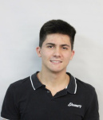

The Genetics and Plant Breeding Group “Prof. Roland Vencovsky” (GVENCK) is formed by graduate students in Genetics and Plant Breeding at “Luiz de Queiroz” College of Agriculture (ESALQ/USP), under coordination of Professor Dr. José Baldin Pinheiro. Our mission is to integrate academics, professors and professionals, focusing on preparing future geneticists and breeders.
Our main activities are:
• Organization of scientific events;
• Promote discussions on relevant Genetic and Plant Breeding issues;
• Technical visits to companies and public research institutions;
• Promote the guidance of young talents under training from the “voice of the graduates”, in which the alumni with consolidated careers will share professional experiences;
• Promote interaction opportunities between students, professors and researchers outside the University;
• Partnerships with companies and public institutions.
Members
José Baldin Pinheiro Associate Professor Genetics and Plant Breeding View Lattes
Renan Silva e Souza PhD student in Genetics and Plant Breeding Soybean Breeding View Lattes
Alline Sekiya PhD student in Genetics and Plant Breeding Biotic Stress in Eucalyptus and Doubled Haploids in maize View Lattes
Iris Satie Hayashi Shimano MSc student in Genetics and Plant Breeding Plant Breeding and Genetic Resources View Lattes
Mariana Niederheitmann PhD student in Genetics and Plant Breeding Vegetable Breeding View Lattes
Maiara de Oliveira MSc student in Genetics and Plant Breeding Soybean Breeding View Lattes
Willian Giordani PhD student in Genetics and Plant Breeding Bean Breeding View Lattes
Emanoel Sanches Martins PhD student in Genetics and Plant Breeding Quantitative Genetics - Soybean Breeding View Lattes
Gabriel de Siqueira Gesteira PhD student in Genetics and Plant Breeding Quantitative Genetics and Plant Breeding View Lattes
Pedro Augusto Medeiros Barbosa PhD student Genetics and Plant Breeding Quantitative genetics – Sugarcane and soybean breeding View Lattes
Rafael Massahiro Yassue MSc student in Plant Breeding and Genetics Soybean Breeding View Lattes
Danilo Hottis Lyra PhD in Plant Breeding and Genetics Maize Breeding View Lattes
Gabriel Lourenço Lopes MSc student in Genetics and Plant Breeding Vegetable Breeding View Lattes
Carolina Hayashibara PhD student in Genetics and Plant Breeding Genetics of Microorganisms / Plant-microbe interactions View Lattes
Jéssica Eliana Nogueira de Souza PhD student in Genetics and Plant Breeding Vegetable Breeding View Lattes
Albania José Patiño Torres PhD candidate in Genetics and Plant Breeding Abiotic Stress in Solanaceae View Lattes

Lucas Rabelo Campos Undergraduate student in Agricultural Engineering View Lattes
Amanda Avelar PhD candidate in Genetics and Plant Breeding Quantitative Genetics - Genomic Selection View Lattes
Elesandro Bornhofen PhD candidate in Genetics and Plant Breeding Soybean and Wheat Breeding View Lattes
Fernando Henrique Correr PhD candidate in Genetics and Plant Breeding Bioinformatics View Lattes
Guilherme Kenichi Hosaka PhD candidate in Bioenergy Bioinformatics View Lattes